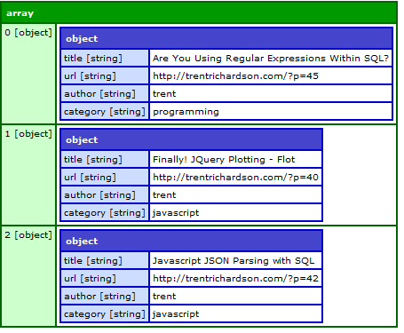

运行示例：
语句1： jsonsql.query("select * from json.channel.items order by title desc",json);
语句2： jsonsql.query("select title,url from json.channel.items where (category=='javascript' || category=='vista') order by title,category asc limit 3",json);
语句3：jsonsql.query("select url from json.channel.items where (category=='javascript' && author=='trent') order by url asc limit 1,2",json);
参数详解：
只支持 Select 查询语句，“JSON”：“json.channel.items”指向一个对象数组, 排序接受参数：asc,desc,ascnum,descnum， limit：接受1，或2个参数，指定要获取数据数量个数。
调用JS方法:
function getAll(){
$.getJSON("testjson.js", function(json){
dump(jsonsql.query("select * from json.channel.items order by title desc,json",json));
});
}
function getFiltered(){
$.getJSON("testjson.js", function(json){
dump(jsonsql.query("select title,url,author,category from json.channel.items where (category=='javascript' || author=='trent') order by title,category asc limit 3",json));
});
}
function getLimit(){
$.getJSON("testjson.js", function(json){
dump(jsonsql.query("select url from json.channel.items where (category=='javascript' && author=='trent') order by url asc limit 1,2",json));
});
}
调用外部JS文件：
<\script type="text/javascript" src="jquery-1.2.1.pack.js"><\/script>
<\script type="text/javascript" src="dump.js"><\/script>:输出文件样式文件
<\script type="text/javascript" src="jsonsql-0.1.js"><\/script>
取得数据效果图：
